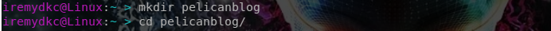
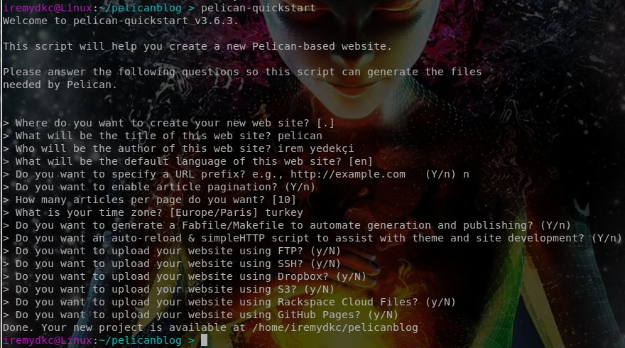
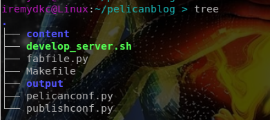
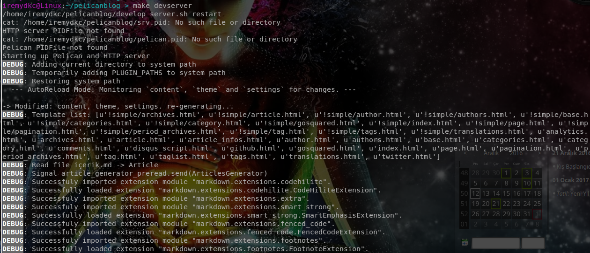
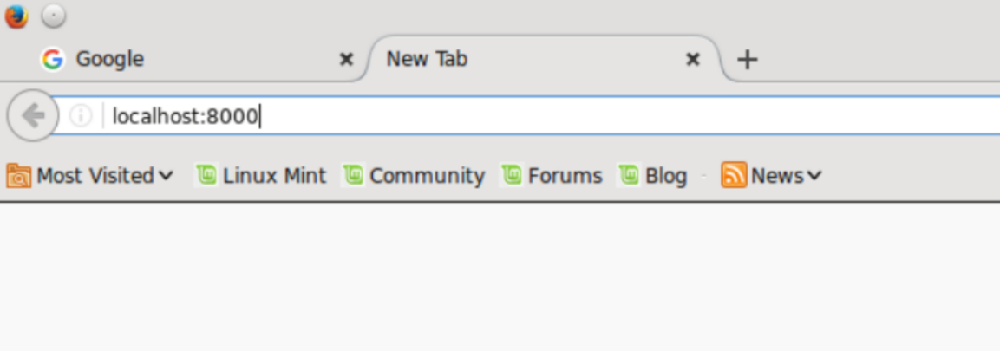
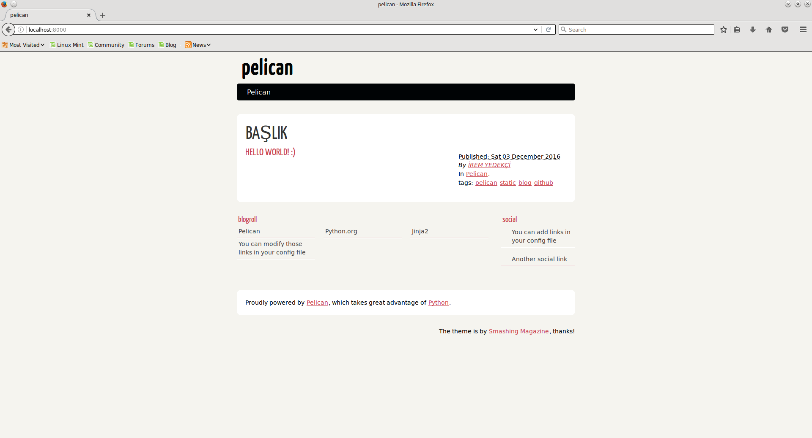
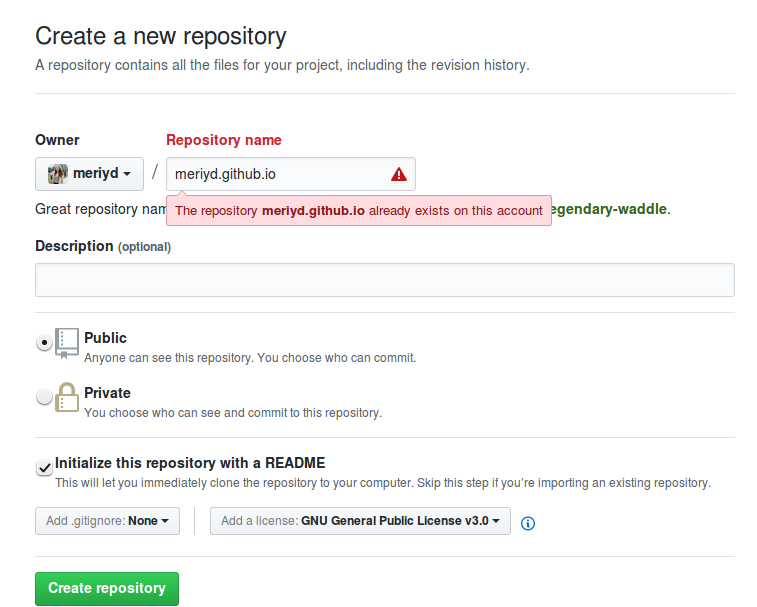

GİTHUB ÜZERİNDE PELİCAN İLE STATİK BLOG NASIL OLUŞTURULUR?
MERHABA YENİ BLOGGER'LAR
Statik Web dünyasına hoşgeldiniz.
Hadi Başlayalım!
Öncelikle "statik web, statik blog nedir?" sorusundan başlayalım.
Statik olur da dinamik olmaz mı? Tabiki olur. Dinamik site; bilgilerin bir veritabanında tutulduğu, etkileşimli bir site yapısına sahiptir.Kullanıcının isteklerine göre veritabanı kullanılarak sayfa hazırlanıp sunulur. Bu bize şunları sağlar:
- Web sitesi her kullanıcı için özel olarak oluşturulabilir. Örneğin; Facebook,Twitter, ... Yani içerik tema vb. şeyler farklılık gösterir.Üyelik gerektiren siteler dinamik yapıdadır.
- Kullanıclar ve gruplar birbirleri ile site üzerinden iletişim kurabilirler yani etkileşim içerisinde olabilirler.
- Server tabanlı diller kullanlır.PHP, ASP, ...
- Güncellemek kolaydır.
Statik sitelere gelince tanıtım ve bilgi amaçlı olarak kullanılırlar.Veritabanına ihtiyacı yoktur.
- Ziyaretçi, kullanıcı etkileşimi yoktur.
- Bilgi ve tanıyım amaçlı olduğu için sık sık düzenleme ve güncelleme gerektirmez.Zaten site yapısı buna müsait değildir.
- herhangi bir değişiklikten sonra tekrar internete yüklemeyi gerektirir.
Amacımız blog oluşturmak olduğu için static olarak bu işi yapacağız.Ayrıca web gün geçtikçe daha da tehlikeli oluyor.Statik sitenizde güvenlik açığı bulunmayacağı için tek saldırı şansı sunucu tarafına olabilir.Bu yüzden de statik siteler dinamiklere göre daha sade ve kullanışsız gibi görünse de daha güvenilirdir.
Bu kısımda bize bir "static site generator" yardımcı olacak. Birçok statik site oluşturucusu mevcuttur. Jekyll, Gitbook, Hugo bunlardan bazıları. Ancak biz Pelican ile işimizi göreceğiz.
Öncelikle pelicanı sistemimize kurmamız gerekmektedir. Bunun için de yine başka bir paket kurulu olmalıdır. pip paketi ile pelicanı indirme işimizi yapacağız. Sırasıyla;
sudo apt-get install pip
sudo pip install pelican
sudo pip install Markdown
sudo pip install typogrify
komutlarını çalıştırıyoruz. Bu komutlar ile pip'i, Pelican'ı ve Pelican kullanmak için gerekli paketleri indirip kurmuş olacağız.
Ardından bir dizin oluşturuyoruz. Daha sonra bu dizinin içine giriyoruz ve burada pelican-quickstart komutunu çalıştırıyoruz. Komutu yeni oluşturduğumuz dizin içinde çalıştırmak önemli. Bu komut ile terminal ekranın da bazı sorular göreceğiz.

Bu soruları cevaplıyoruz. Şu an ihtiyacımız olmayacağı için bazı sorulara hayır yanıtını vereceğiz. Aşağıdaki gibi cevaplarsak bizim için ideal olacaktır.Boş gözüken cevaplar enter ile geçilmiş ve parantez içinde büyük harf ile gösterilen seçenek cevap kabul edilmiştir.

Artık dizinimizin içinde gerekli olacak dosya ve dizninlere sahibiz.

Bunlardan bizim için en önemlileri :
CONTENT: Sayfa içeriğini bulunduracak olan dizinimizdir.
OUTPUT : Sayfanın çıktısını verecek olan .html, .css, gibi uzantılara sahip dosyaları ve bunlarla alakalı gerekli dizinleri içeren dizinimizdir.
pelicanconf.py : Sayfanın dili, başlığı, sitenin sayfa sayısı gibi en baştaki soruların cevaplarını içeren dosyadır.
Tüm bunları hallettikten sonra geldik sayfa içeriğini oluşturmaya. html kodları ile uğraşmayacağımız için bir yazı formatı kullanmalıyız. Markdown ve reStructuredText bunlardan en popüler olanları. Ben markdown'u seviyorum ve onu kullanıyorum.
+Peki nedir bu yazı formatı?
-Aslında bildiğiniz metin dosyası. Kendine göre kuralları var. İçeriğin dönüştürülebilir ve tanışabilir olmasında çok yardımcı.
+Peki neden bir yazı formatı kullanıyoruz?
-Çünkü o uzun ve karmaşık tonlarca html kodları ile uğraşmak istemiyoruz. Yazı formatı daha basit kurallarla onun yerine alıyor ve sayfa oluşurken html kodlarını ekliyor. html kodlarının eklenmiş hali ise output'un içinde .html uzantısı ile yer alıyor.
Markdown formatının kurallarına getgrav.org ve markdown cheatsheet adreslerinden ulaşabilirsiniz.
Bu kurallar ile içeriğimizi oluşturduktan sonra .md uzantılı olarak kaydediyoruz. Tabiki "content" dizininin içinde yer almalı.
Tüm bunlar ile aslında basic olarak sitemizi oluşturduk. Önizleme için yine proje dizinimizin içindeyken
make devserver
komutu ile siteyi local olarak görebiliriz.

Bu bize internete yükleme yapmadan önce gözden geçirmeyi ve görsel olarak düzenleme imkanını verir. Sitemizi görebilmek için tarayıcımızın URL kısmına
localhost:8000
 yazıyoruz ve enter'a tıklıyoruz. İşte karşımızda etten kemikten hazırladığımız blog :)

Artık içeriğini istediğiniz gibi doldurabilirsiniz :)
Tüm bunların ardından tema eklemek güzel olacaktır. Sitemize dilediğimiz şekilde görsellik katabiliriz. Bunun için Pelican'ın hali hazırda olan temalarını kullanacağız. Ancak buna başka bir başlıkta değinmek isterim.
Şimdi oluşturduğumuz pelican sayfasını Github'a atalım. Küçük bir tanıtım olarak Github bir versiyon kontrol sistemidir. GNU/Linux sistemlerde git ile kullanılabildiği gibi web sitesinden ya da bir user interface programı ile kullanılabilir. Ben git ile kullanıyorum ve o şekilde anlatacağım. Öncelikle;
sudo apt-get install git git-doc
git config --global user.name kullanıcı_adı
git config --global user.email kullanıcı_email@....
komutlarını sırasıyla yazıyoruz. Ekrana bakmayalım boş boş ne işe yarıyor bunlar diye. Soru bu değil mi? İlk komutumuz git'i sistemimize kuruyor. İkinci ve üçüncü komutumuzla git için kullanıcı adı ve kullanıcı e-postamızı tanıtıyoruz.
ls ~/.ssh
ssh-keygen
Yukarıdaki ilk komut bize sistemde varsa ssh dosyalarını gösterir ve bunlar aşağıdakilerden birkaçı gibi olmalıdır.
d_dsa.pub
id_ecdsa.pub
id_ed25519.pub
id_rsa.pub
Eğer yoksa;
ssh-keygen
komutu ile yeni bir ssh oluşturmaya başlarız.Bu komutu girdiğimizde bizden bir keyword girmemizi ister.Bununla ssh key'ini oluşturmak için bir algoritma oluşturulur."id_rsa" ve "id_rsa.pub" adında iki dosya olurşur. Bunlardan "id_rsa.pub" dosyasının içinde ssh-rsa dahil sonuna kadar bizim key'imiz yer almaktadır. Bunu kopyalayıp Github'da ayarlar kısmında "SSH and GPG keys" kısmına tıklayıp "new ssh" diyoruz ve kopyaladığımız key'i buraya yapıştırıyoruz. Add butunonu tıkladıktan sonra geriye yalnızca bir repo oluşturup projeyi yüklemek kalıyor.Github pages için repo'muzun adı "kullanıcı_adı.github.io" şeklinde olmalı.
Ben de kabul etmemesini sebebi zaten var olması :) Sizde kabul edecektir.Github kullanıcı adınız olacak.Gördüğünüz seçenekleri resimdeki gibi yapmanız iyi olur bence. Nedenlerini araştırabilirsiniz ya da ilerde belki ben bi yazı ile gelirim karşınızda. ;P
Geri kalan kısım için aşağıdaki komutları sırasıyla çalıştırırız.Ancak ilk önce "cd output" komutu ile output dizinimizin içine gireriz. Çünkü Github'a yüklenmesi gerekenler bu dizin içerisinde.
git init
git remote add origin https://...(reponuzun linki)... .git
git add *
git commit -m "commit_mesajı"
git push -u origin master
- git init: output dizininde bir git deposu oluşturur.".git" şeklindedir ve gizlidir.
- git remote add origin master reponuzun_linki.git: Github'da oluşturduğunuz repo git için uzak bir repodur. Github'ı git kullanarak yöneteceğimiz için repolar arasında bir bağlantı kurmalyız.Bu komut ile Github'daki uzak repomuzu git'e tanıttık.
- git add *: proje dosya ve dizinlerini git deposuna ekler."*" hepsini ekle anlamına gelir.
- git commit -m "commit_mesajı": yapılan eklemeler ve değişikler için hem bize hem de projeyi takip etmek isteyen kişilere kolaylık sağlamak ve bilgi vermek amaçlı yorum eklememizi sağlar.
- git push -u origin master:: en sonunda git deposuna eklediğimiz projemizi Github'daki uzak repomuza atar.
git push ile hata alırsanız öncesinde "git pull ~repo_linki~ komutunu girip ardından push etmeyi deneyin.Ufak bir ayrıntıya da dikkat edelim: git remote add komutunda linkin sonuna ".git" eklemeyi unutmayalım.
Eğer git kullanmayı bilmiyorsanız kesinlikle öğrenmeniz gerekir. Çünkü projemizde yaptığımız değişiklikleri eklemek beğenmezsek çıkarmak gibi işlemlerimiz olabilir.
Google her zaman yardımcınız :)
Umarım yardımcı olabilmişimdir.Bloğunuzla iyi eğlenceler :)